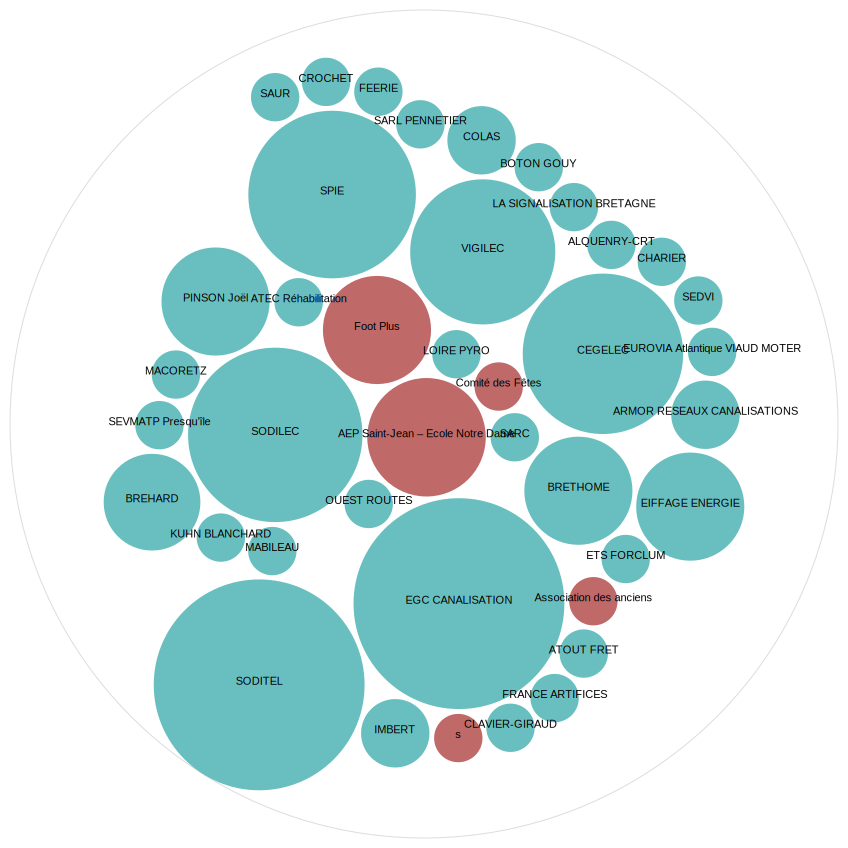

Les conseils municipaux de Chéméré depuis 2004
La présence au Conseil Municipal depuis 2004
La présence des élus sous la mandature 2001 — 2008
La présence des élus sous la mandature 2008 — 2014
La présence des élus depuis 2014 — ...
La géolocalisation des arrétés depuis 2010
Voir en plein écran
Les personnes morales citées dans les arrêtés depuis 2010
